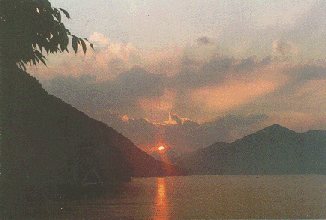
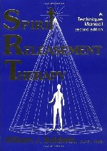

1995
1995 Motto: "Låt oss ärva Sanna Föräldrars sför av seger."

3-dagars och 40-dagars Chung Pyung träning för förfäders befrielse startar 19 januari 1995.
Chung Pyung är ett andligt träningsläger i bergen nära 38:e breddgraden i norraSydkorea.
Nationella Messias har sänts ut efter en 40-dagars särkild träning. Alla kyrkoledare i andligt centrala
nationerna Korea, Japan, och USA har avslutat träningen mellan 20 december 1996 och januari 1997. Ledare på alla
nivåer och medlemmar från hela världen har kontinuerligt deltagit i detta 40-dagars träningsläger.
Juni 1995; Som ett slags märklig världs-återspegling av det andliga helande som startade i Cheong Pyoung Korea i
januari 1995, 
publicerades samma är en bok med liknande innehåll"Spirit Releasement Therapy - andlig befrielse-terapi"

24 aug Sanne Far välsignar 3 par i andliga världen - Hans föräldrar (Chung far och Chung mor), Sanna mors föräldrar (Dae Bu Nim och Dae Mo Nim) och hans äldre bror (Dae Hyeong) och dennes hustru.
25 aug 1995 - 360 000 pars Välsignelse
Därmed uppfylldes antalet 144 000 nämnt i Bibeln (Upp.).